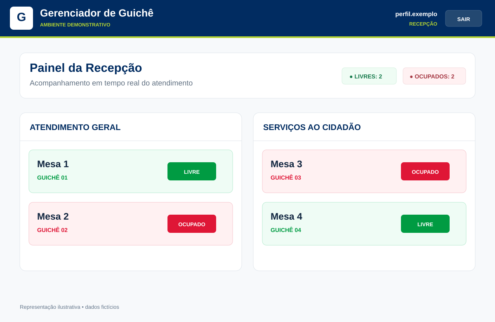
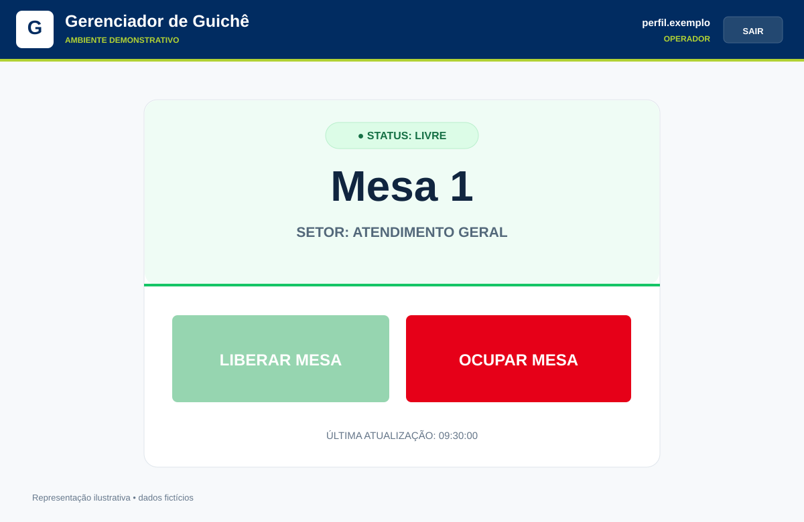
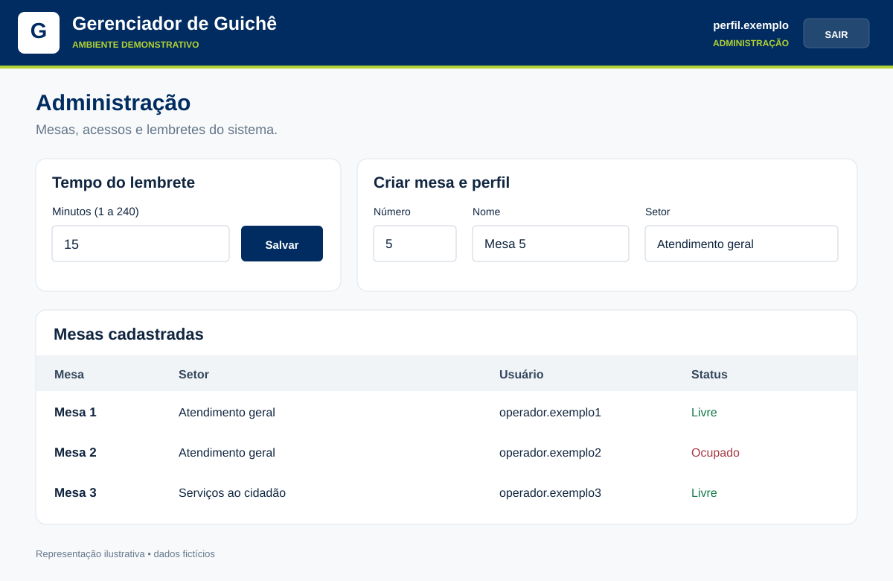

Disponibilidade visível
Reunir o status das mesas por setor, permitindo à recepção consultar a situação do atendimento.
Um painel compartilhado para acompanhar quais guichês estão livres ou ocupados e apoiar a comunicação entre recepção e operadores.
Interfaces demonstrativas com dados fictícios, recriadas a partir do sistema.
A recepção precisava saber quais mesas estavam disponíveis para orientar o atendimento. O Guichê-PMPS nasceu dessa demanda: tornar visível o estado dos guichês em um ponto comum de consulta.
Reunir o status das mesas por setor, permitindo à recepção consultar a situação do atendimento.
Conectar a ação do operador à informação exibida no painel, com atualização em tempo real.
Apoiar o encaminhamento pela disponibilidade dos guichês. O foco do case é o status das mesas e a comunicação interna.
Mesas organizadas por setor e identificação visual de disponibilidade. O painel reúne informações que ajudam a recepção a orientar o encaminhamento.

O operador acompanha a situação da sua mesa e informa quando ela está livre ou ocupada. Essa mudança é refletida nos painéis conectados.
Uma área reúne o cadastro das mesas, sua vinculação a setores e os perfis de acesso. Também permite configurar o intervalo de lembrete do sistema.

O Guichê-PMPS foi minha primeira iniciativa desenvolvida como solução interna. O processo envolveu entender a necessidade, definir o comportamento esperado e acompanhar a construção até o uso.
Identificação da necessidade, levantamento e refinamento de requisitos, definição de regras de negócio e decisões funcionais.
Condução do desenvolvimento assistido por IA, com testes incrementais e validação do fluxo de atendimento.
Preparação e implantação da solução para atender à demanda interna identificada.
O frontend apresenta os painéis de cada perfil. A API recebe as ações, persiste os dados e distribui as mudanças de status por WebSocket para os clientes conectados.
A solução foi desenvolvida, implantada e utilizada internamente para acompanhar a disponibilidade dos guichês. O case registra uma entrega voltada a uma necessidade real do ambiente de trabalho.
Foi também o primeiro projeto dessa trajetória de soluções internas, anterior ao SupriTI, reunindo requisitos, desenvolvimento assistido, testes e implantação.